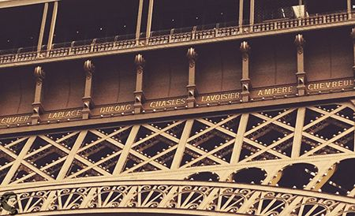

에펠탑(Eiffel Tower)
- 개요
프랑스의 건축가 알렉상드르 귀스타브 에펠(Alexandre Gustave Eiffel, 1832~1923)이 만든 거대한 철탑.
파리, 프랑스의 대표적인 랜드마크이다. 근대 건축의 혁신점 중 하나로, 1889년에 300m라는 경이적인 높이를
달성하여 1930년까지 크라이슬러 빌딩이 완공되기 전까진 세계에서 가장 높은 구조물이었다.
건축 높이 300m에 훗날 추가된 안테나 24m를 더해 전체 높이 324m다.
- 역사
프랑스가 보불전쟁에서 독일에게 패한 치욕을 만회하고 국력을 과시하기 위해 1889 파리 엑스포에 전시할 목적으로 세워졌다. 특히 영국이
자랑하는 최신 건물이었던 수정궁과 세인트 판크라스 역을 의식하여 기둥간의 거리를 115m로
늘린 기계관(판크라스 역은 73m)과 300m 높이의 에펠탑을 선보였으며, 일종의
기술을 과시하는 용도였기 때문에 원래는 20년간 설치했다가 해체할 예정이었다. 사실 건축적인 의의는 기계관이 더 크다고
평가할 수 있지만 대중이 느끼는 시각적인 충격은 에펠탑이 더 뛰어났고, 결국 우여곡절 끝에 오늘날엔 에펠탑만이 살아남았다.
마천루가 즐비한 오늘날에는 잘 느끼기 어렵지만, 약 169m의 구조물인 워싱턴 기념탑, 161m의 건축물인
울름 대성당이 가장 높던 시절에 등장한 300m의 타워란 충격적인 광경이었다. 인류 역사상 이토록 인간의 구조물의 고도가 '갑자기' 올라간 적이 없었다. 특히 철을 가지고도
고전적 건물을 모방하기 바뻤던 시대에 철골을 당당하게 드러낸 에펠탑의 위용은 마치 새로운 신 건축의 시대를 선언하는 듯 하였으며, 이는
에펠 같이 토목 분야에서 활동하던 구조 공학자들이 일반적인 건축가보다 산업시대의 새로운 재료들을 더 빠르게 활용했기에 가능했던 진보다.
에펠탑은 건설비가 너무 많이 들어서 그 대부분을 에펠이 내고 20년간 독점권을 인정받았는데, 욕먹는 걸 참아가며 만든 보람이 있어서 에펠의
예상대로 3년만에 투자비를 다 뽑아냈다. 앞에서 언급했듯이 원래는 20년 후에 철거될 예정이었지만, 철거하기에는 너무 아까웠던 에펠의 설득과 송신탑으로 써먹자고
한 군부 고위층의 결정으로 살아남게 되었고, 그렇게 쭉 있다보니 결국엔 어느덧 파리 시는 물론 프랑스 전체의 상징이 되었다. 그야말로 격세지감.
이후 군부의 결정대로 1914년 1차 세계대전 당시 통신 중계탑으로 잠시 쓰이다가, 1925년 첫 라디오 방송을 시작했고, 이후 TV방송용으로도 쓰여왔다.
21세기에도 계속 방송 중계탑으로 역할을 했는데, 점차 케이블선을 이용한 디지털 방송이 확대됨에 따라 기념탑으로만 남게 될 가능성이 높다. 물론
군용 통신탑(송신용)으로는 계속 쓰일 것이다.
- 구조
총 3층으로 이루어져 있으며, 1~2층까지 가는 엘리베이터는 옛날의 유압식 엘리베이터. 따라서 엘리베이터를 타면서 옆을 보면 거대한 통이
움직이는 것을 볼 수 있다. 3층으로 가는 것은 현대식이다. 특이하게도 엘리베이터가 2층으로 이루어져 있기도 하다.
철골만으로 이루어진 것은 이유가 있는데, 300m 수준의 높은 구조물은 풍압의 영향이 상당하기 때문에 바람을 통과시키는 것이 안전하기 때문이다.
당시에는 이러한 면에 대한 지식이 부족했지만, 토목쪽에서 경험이 많은 구스타프 에펠은 경험적으로 이를 알고 있었다. 그럼에도 불구하고
바람이 심한 날에는 탑이 흔들리기 떄문에 안전상의 문제로 3층은 출입을 통제한다고 한다.
이외에도 대부분의 구조물이 그렇듯이 계절에 따라 미세하게 이완과 수축을 한다.
사실 기술 실증용 20년짜리 가건물로 만들었기 때문에 가까이서 보면 거친 구조물이 있을 뿐, 섬세하다거나 화려한 장식은 없다.
단지 압도적으로 큰 크기와 복잡한 구조물만 있을 뿐이다.

잘 알려져 있지 않지만, 에펠탑을 실제로 가까이에서 보면 1층 전망대 아래 부분(아치 위)에 탑의 4면을 따라 프랑스의 유명한 과학자,
공학자 및 수학자들의 이름이 새겨져 있다. 각 면에 18명씩
총 72명이 새겨져 있으며, 이공계 학생들이라면 수업중 한번씩 들어봤을 만한 유명한 학자들의
이름이 황금색으로 빛나고 있어 프랑스 국력의 위엄을 새삼스레 느낄 수 있다.
명단은 에펠 본인이 직접 선정하였으며, 이러한 이름을 새긴 이유는 예술가들이 에펠탑 건설에 반대하는 것을 우려하여
'과학에 대한 관심 촉구'의 의미에서 작업을 결심했다고 한다. 그런데 아이러니하게도 에펠탑은 문화와 예술의 도시 파리의 상징이 되어버렸으니... 각인된 이름들은
무슨 이유에선지 20세기 초반에 페인트로 덮었다가 87년도에 다시 복원했다고 한다.